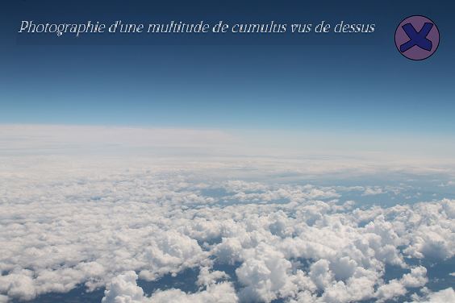
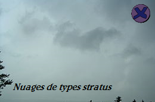
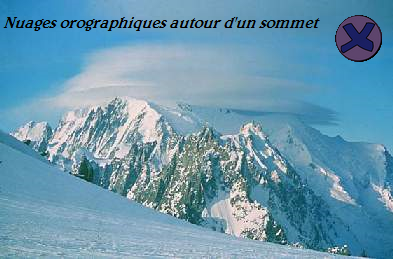

Les cas généraux de nuages
La formation des nuages est, elle, directement liée aux rayonnements de la Partie 1 qui chauffent la surface de la Terre. En effet grâce à ce réchauffement l’eau présente sur la surface s’évapore et charge l’air chaud du sol en vapeur d’eau. Cet air chaud va ensuite, de plusieurs façons, rencontrer l’air froid en altitude : - L’air chaud va monter en altitude, étant moins dense que l’air froid. L’air ambiant est instable, on parle de convection. - L’air chaud va rencontrer un fort relief (comme une montagne) et va s’élever au contact de celui-ci. - Des vents forcent l’air chaud à monter, comme au niveau des dépressions, c’est la convergence. - Une couche d’air froid va s’immiscer entre le sol et une couche d’air chaud, surélevant cet air chaud. On parle de front chaud et de front froid qui aident la convection. Au contact de cet air froid, la vapeur va se condenser pour former de fines gouttelettes d’eau. En savoir plus
Ces gouttelettes vont ensuite se rassembler pour former des nuages, ceux-ci seront différents en fonction de la manière dont l’air chaud rentre en contact avec l’air froid. Il en existe plusieurs types : - Les nuages convectifs : Formés par l’instabilité de l’air des nuages, principalement de type « cumulus », se développent. Voir ce type de nuage en cliquant longuement - Les nuages de fronts : Grâce aux fronts d’air chaud/froids, plusieurs nuages voient le jour comme les nuages de type « stratus » Voir ce type de nuage en cliquant longuement - Les nuages orographiques : Formés par l’élévation de l’air chaud par un relief local, ces nuages sont pour la plupart géostationnaires à proximité du relief grâce auquel ils se sont formés. Voir ce type de nuage en cliquant longuement En savoir plus